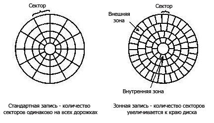

Жесткий диск (НDD - Hard Disk Drive) устроен следующим образом: на шпинделе, соединенным с электромотором, расположен блок из нескольких дисков (блинов), над поверхностью которых находятся головки для чтения/записи информации. Форма головкам придается в виде крыла и крепятся они на серпообразный поводок. При работе они "летят" над поверхностью дисков в воздушном потоке, который создается при вращении этих же дисков. Очевидно, что подъемная сила зависит от давления воздуха на головки. Оно же, в свою очередь, зависит от внешнего атмосферного давления. Поэтому некоторые производители указывают в спецификации на свои устройства предельный потолок эксплуатации (например, 3000 м). Диск разбит на дорожки (или треки), которые в свою очередь поделены на сектора. Две дорожки, равноудаленные от центра, но расположенные по разные стороны диска, называются цилиндрами.
Цилиндры, головки и секторы. На физическом уровне диск имеет три степени свободы для указания того места, где информация будет записываться или считываться:
CHS – трехмерный адрес сектора, где С – номер цилиндра, H – номер головки, S - номер сектора.
Количество секторов на диске = C*H*S
ИМ – индексный маркер.
Gi – индексные промежутки.
Секторi – номер i-го сектора.
W/R – интервал переключения запись/чтение.
Gap – промежуток конца дорожки.
IDi – поле идентификатора.
Ri – поле данных.
АМ – адресный маркер.
CRC – байты контроля.
DM – маркер данных.
R – данные.
ECC – код коррекции ошибки.
Первые жесткие диски обладали относительно небольшим числом цилиндров, головок и секторов и, вдобавок, не имели такого умного контроллера как сегодняшние. Поэтому адресация блоков у них производилась указанием трех чисел, номера цилиндра, головки и сектора, и эти номера соответствовали физической организации данных. Со временем это стало не так. На разных цилиндрах находится разное число секторов. Контроллеры современных дисков сами выдумывают некоторую виртуальную геометрию диска, которую сообщают компьютеру. Поэтому ценность такого трехкоординатного указания адреса теряется, и такой способ постепенно отмирает, оставляя лишь проблемы с совместимостью.
В современных НЖМД для повышения их емкости за счет более эффективного использования поверхности дисков, организуют разное количество секторов на дорожках: на внешних - больше, на внутренних - меньше. Таким образом, группы дорожек (зоны), расположенные ближе к краю дисков имеют большее количество секторов, а расположенные ближе к центру – меньшее. Количество зон на диске может быть от 9 до 18. Итак, на всех дорожках одной зоны содержится одинаковое количество секторов, однако в каждой из зон – разное количество дорожек.
Такой метод повышения емкости получил название Zoned-Bit Recording (зонная запись). Это делается только в накопителях, конструктивно совмещенных с контроллером (использующих интерфейс IDE или SCSI).
DOS и BIOS не могут понять того, что у диска может быть различное число секторов на различных дорожках. Однако именно по такому принципу строятся самые современные жесткие диски. Ведь операционная система может работать только при постоянном количестве секторов на дорожках.
Поэтому контроллер НЖМД показывает системе не реальные параметры накопителя (с переменным количеством секторов), а то количество цилиндров, головок и секторов, произведение которых (с учетом размера сектора) дает реальную емкость НЖМД.
При этом, поступающие при запросе системы в контроллер накопителя такие логические номера цилиндров, дорожек и секторов преобразовываются им в конкретные физические номера, которые получаются совершенно безразличны для пользователя.
Существуют два режима, позволяющих использовать такой диск для работы с DOS, и, следовательно, с PC:
Этот фиктивный дисковод (используемый при доступе к информации по запросам DOS) может иметь практически произвольный набор чисел, определяющих количество его головок, секторов на дорожке и цилиндров. Эти преобразованные параметры записываются в CMOS. Но методов трансляции может быть много и из-за их несовпадения возможна несовместимость дисков, размеченных при разных версиях BIOS.
Каждому сектору ставится в соответствие линейный адрес, который вычисляется однозначно в естественном порядке счета. Сектору с нулевым линейным адресом соответствует первый сектор нулевой головки нулевого цилиндра.
LBA=(CYL*HDS+HD)*SPT+SEC-1, где CYL, HD, SEC – номера цилиндра, головки и сектора в пространстве CHS HDS – количество головок; SPT – количество секторов на треке.
{kind=link}
{kind=link}